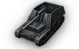
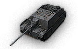
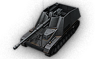
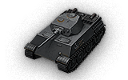
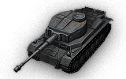
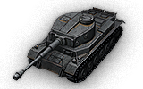
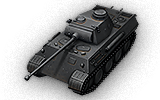
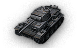

Germany · Tier VI
All nations and tiers · EU v20410 → RU v14600ru · 3 November 2026
Hummel · Tier VI

Penetration (mm)
EU  HE 39 /
HE 39 /  HE 49 /
HE 49 /  HEAT 188 → RU
HEAT 188 → RU  HE 38 /
HE 38 /  HEAT 188
HEAT 188
Damage (HP)
EU  HE 600 /
HE 600 /  HE 730 /
HE 730 /  HEAT 400 → RU
HEAT 400 → RU  HE 750 /
HE 750 /  HEAT 450
HEAT 450
Firepower
DPM (HP/min) EU 1 207.33  RU 1 618.45
RU 1 618.45
Rate of fire (rounds/min) EU 2.01 RU 2.16
Reload time (s) EU 29.82 RU 27.80
Explosion radius EU 6.70  RU 5.60
RU 5.60
Stun duration · maximum (s) EU 16 → RU —
Stun duration · minimum (s) EU 9.60 → RU —
Shell velocity (m/s) EU 420 RU 435
Max range (m) EU 1 253.10 RU 1 325.27
Potential damage EU 10 800 RU 13 500
Mobility
Tank traverse on hard terrain (°/s) EU 27.57 RU 29.77
Tank traverse on medium terrain (°/s) EU 23.63 RU 25.52
Tank traverse on soft terrain (°/s) EU 14.39 RU 15.53
Armor & health
Health · engine EU 205 RU 86
Health · ammo rack EU 170 RU 90
Miscellaneous
Shell cost EU 980 RU 1 170
Jagdpanzer IV · Tier VI

Penetration (mm)
EU  AP 160 /
AP 160 /  APCR 198 /
APCR 198 /  HE 44 → RU
HE 44 → RU  AP 145 /
AP 145 /  APCR 194 /
APCR 194 /  HE 44
HE 44
Firepower
Shell velocity (m/s) EU 890 RU 773
Mobility
Forward speed on soft terrain (km/h) EU 32.09 RU 31.10
Reverse speed (km/h) EU 14 RU 12
Engine power (hp) EU 480 RU 465.20
Power/weight (hp/t) EU 19.39 RU 18.79
Tank traverse (°/s) EU 54.24 RU 36.50
Tank traverse on hard terrain (°/s) EU 58.15 RU 46.51
Tank traverse on medium terrain (°/s) EU 49.20 RU 39.35
Tank traverse on soft terrain (°/s) EU 27.81 RU 22.24
Armor & health
Health · engine EU 205 RU 86
Health · track EU 145 RU 120
Track repair time (s) EU 11.62 RU 12.03
Nashorn · Tier VI

Gun handling
Depression (°) EU 5 RU 8
Mobility
Forward speed on soft terrain (km/h) EU 27.71 RU 22.83
Engine power (hp) EU 385 RU 317.18
Power/weight (hp/t) EU 16.02 RU 13.20
Tank traverse (°/s) EU 46.93 RU 37.55
Tank traverse on hard terrain (°/s) EU 49.41 RU 41.20
Tank traverse on medium terrain (°/s) EU 41.18 RU 34.33
Tank traverse on soft terrain (°/s) EU 22.46 RU 18.73
Armor & health
Health · engine EU 205 RU 86
VK 28.01 · Tier VI

Mobility
Tank traverse (°/s) EU 60.49 RU 47.98
Tank traverse on hard terrain (°/s) EU 66.66 RU 52.70
Tank traverse on medium terrain (°/s) EU 58.33 RU 46.11
Tank traverse on soft terrain (°/s) EU 27.45 RU 21.70
Armor & health
Health EU 780 RU 680
VK 30.01 (P) · Tier VI


Penetration (mm)
EU  AP 162 /
AP 162 /  APCR 199 /
APCR 199 /  HE 44 → RU
HE 44 → RU  AP 145 /
AP 145 /  APCR 194 /
APCR 194 /  HE 44
HE 44
Firepower
DPM (HP/min) EU 1 835.68 RU 1 995.30
Rate of fire (rounds/min) EU 8.34 RU 9.07
Reload time (s) EU 7.19 RU 6.62
Mobility
Forward speed on soft terrain (km/h) EU 22.87 RU 22.50
Engine power (hp) EU 720 RU 708.38
Power/weight (hp/t) EU 14.93 RU 14.69
Tank traverse on hard terrain (°/s) EU 31.51 RU 41.80
Tank traverse on medium terrain (°/s) EU 22.83 RU 30.28
Tank traverse on soft terrain (°/s) EU 11.41 RU 15.14
Armor & health
Hull armor · front (mm) EU 160 RU 75
Turret armor · front (mm) EU 160 RU 100
Health EU 1 150 RU 1 100
VK 30.02 (M) · Tier VI

Gun handling
Aim time (s) EU 1.92 RU 2.21
Dispersion (m/100 m) EU 0.33 RU 0.34
Dispersion · damaged EU 0.65 RU 0.67
Dispersion · turret traverse EU 0.10 RU 0.12
Mobility
Forward speed on soft terrain (km/h) EU 29.91 RU 29.12
Engine power (hp) EU 760 RU 740.10
Power/weight (hp/t) EU 18.07 RU 17.60
Tank traverse (°/s) EU 39.63 RU 31.29
Tank traverse on hard terrain (°/s) EU 38.32 RU 34.07
Tank traverse on medium terrain (°/s) EU 31.93 RU 28.39
Tank traverse on soft terrain (°/s) EU 16.66 RU 14.81
Armor & health
Health EU 1 100 RU 940
VK 36.01 (H) · Tier VI

Mobility
Forward speed on hard terrain (km/h) EU 41.53 RU 39.92
Forward speed on medium terrain (km/h) EU 35.60 RU 34.22
Forward speed on soft terrain (km/h) EU 17.19 RU 16.52
Engine power (hp) EU 550 RU 528.64
Power/weight (hp/t) EU 13.10 RU 12.59
Tank traverse (°/s) EU 34.42 RU 25.03
Tank traverse on hard terrain (°/s) EU 33.67 RU 29.29
Tank traverse on medium terrain (°/s) EU 28.86 RU 25.10
Tank traverse on soft terrain (°/s) EU 13.93 RU 12.12
Armor & health
Health EU 1 250 RU 1 200
Miscellaneous
Moving camo EU 3.26 RU 3.21
Moving camo · after firing EU 0.78 RU 0.76